溶液的行為
材料很少是純物質。合金是金屬的固溶體、陶瓷是氧化物的固溶體、半導體的功能來自微量摻雜——這些都是溶液（solutions）。第九章建立描述溶液熱力學的完整框架，從理想溶液（Raoult 定律）出發，引入活性（activity）來處理非理想行為，並通過正規溶液（regular solution）模型將混合熱與相分離現象聯繫起來。本章是第十章（二元相圖）和第十三章（凝態反應平衡）的直接理論基礎。
在本章中，我們將學習：
- Raoult 定律（溶劑）和 Henry 定律（溶質）——理想稀溶液的行為
- 活性 $a_i$ 與活性係數 $\gamma_i$——非理想性的量化
- Gibbs–Duhem 方程式——各成分活性之間的內在約束
- 理想溶液的熱力學——$\Delta G_{\text{mix}} = RT\sum x_i\ln x_i$
- 超額函數（excess functions）——量化偏離理想性的程度
- 正規溶液模型——用一個參數 $\Omega$ 預測固溶度、混溶間隙和相分離
🧭 本章推理地圖
- 從蒸氣壓到化學位：Raoult 與 Henry 定律把溶液組成連到成分化學位。
- 從組成到有效濃度：用活性 $a_i$ 與活性係數 $\gamma_i$ 表示非理想性。
- 從單一成分到整體一致性：Gibbs–Duhem 方程式約束各成分活性，避免熱力學資料彼此矛盾。
- 從自由能曲線到相圖：理想、超額與正規溶液模型共同決定混溶間隙、固溶度與第十章二元相圖。
9.1 導論（Introduction）
- 溶液是多成分在單一相中的原子或分子尺度均勻混合。
- 化學位與活性是描述合金、陶瓷固溶體與摻雜半導體的核心語言。
- 第九章提供第十章相圖與第十三章凝態反應平衡的自由能基礎。
什麼是溶液？從熱力學角度看，溶液是兩種以上物質在原子或分子尺度均勻混合的單一相。溶液可以是氣態（空氣）、液態（海水、熔融金屬）或固態（合金、摻雜半導體）。溶液熱力學的目標是回答：
- 兩種元素能否形成固溶體？還是會形成金屬間化合物？還是分相？
- 給定組成和溫度，各成分的化學位是多少？（→它們的蒸氣壓、反應性）
- 溶液的自由能如何隨組成變化？（→決定相圖的形狀）
解決這些問題的核心工具是第五章引入的化學位 $\mu_i$，以及本章引入的活性 $a_i$。活性是化學位的「翻譯」——將抽象的 $\mu_i$ 轉化為可以與組成直接比較的量。
- 第四章：統計力學的組態熵概念是 $\Delta S_{\text{mix}}^{\text{id}} = -R\sum x_i\ln x_i$ 的微觀基礎（參見 §4.6 混合熵）——理想溶液混合熵正是隨機混合的組態熵
- 第八章：理想氣體混合的 $\Delta G_{\text{mix}}$ 形式與理想溶液完全相同——$\Delta G_{\text{mix}} = RT\sum n_i\ln x_i$，兩者都源於無交互作用的隨機混合假設，構成從氣態到凝態的統一框架
- 第十章：正規溶液模型是二元相圖 CALPHAD 計算的基礎——溶液相自由能 $G^\phi = \sum x_i G_i^\circ + RT\sum x_i\ln x_i + G^{\text{xs}}$ 是第十章所有相圖計算的出發點
- 第十三章：活性 $a_i$ 直接進入反應平衡常數 $K = \prod a_i^{\nu_i}$，用於凝態反應（如氧化物還原、鋼液脫氧）的平衡計算
例題 9.1：為什麼鋼中的微量碳不能只用莫耳分率描述？
碳在鐵中的位置、周圍原子交互作用與標準態選擇都會影響其化學位。
因此平衡計算使用 $a_C=\gamma_C x_C$，而不是只使用 $x_C$。
當 $\gamma_C$ 很大時，少量碳也可能有很高反應性。
9.2 Raoult 定律與 Henry 定律
- Raoult 定律描述接近純成分端的溶劑行為。
- Henry 定律描述無限稀釋端的溶質行為。
- 蒸氣壓偏離可直接反映溶液中成分化學位偏離。
考慮一個與其蒸氣達成平衡的液態（或固態）溶液。成分 $i$ 在兩相中的化學位必須相等：$\mu_i^{\text{sol}} = \mu_i^{\text{vap}}$。對於理想氣體，$\mu_i^{\text{vap}} = \mu_i^\circ + RT\ln(P_i/P^\circ)$，因此溶液的化學位直接反映在該成分的蒸氣壓上。
Raoult 定律（溶劑行為，$x_i \to 1$）
法國化學家 François-Marie Raoult 在 1880 年代發現：許多溶液的溶劑蒸氣壓與其莫耳分率成正比：
其中 $P_i^\circ$ 是純成分 $i$ 在相同溫度下的飽和蒸氣壓。Raoult 定律在 $x_i \to 1$（溶劑端）時總是成立——這是一個熱力學必然，而非巧合（可從 Gibbs–Duhem 方程式證明）。
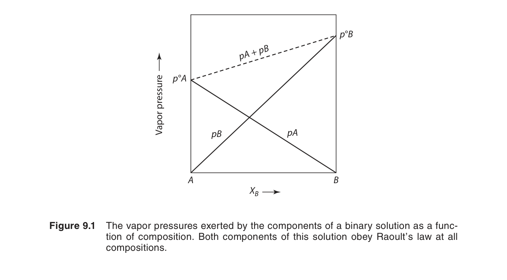
Henry 定律（溶質行為，$x_i \to 0$）
對於稀溶液中的溶質，蒸氣壓仍然與濃度成正比，但比例常數不是純物質的蒸氣壓：
$k_H$ 是Henry 常數——取決於溶質和溶劑的組合，以及溫度。$k_H$ 可能遠大於或遠小於 $P_i^\circ$，反映溶質–溶劑交互作用相對於溶質–溶質交互作用的強弱。
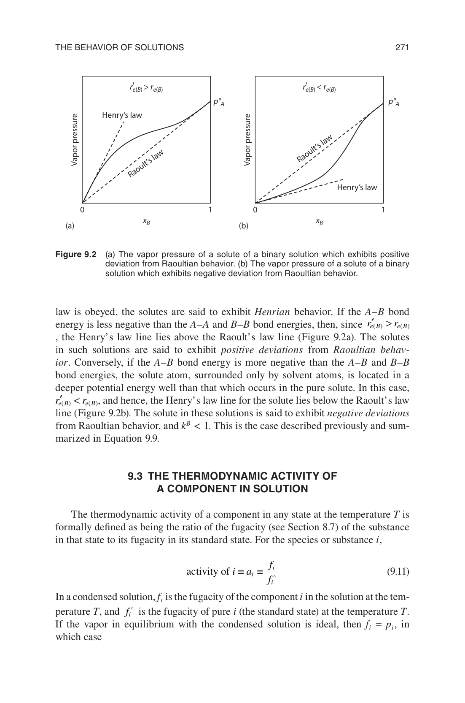
例題 9.2：判斷該用 Raoult 還是 Henry
在 Cu-rich Cu–O 熔體中，Cu 是溶劑端成分，可用 Raoultian 標準態描述。
氧是稀溶質，常以 Henrian 標準態描述。
若把稀溶質硬套純氧標準態，活性係數會失去簡潔的稀釋極限。
9.3 熱力學活性（Thermodynamic Activity）
- 活性讓非理想溶液仍可寫成 $\mu_i=\mu_i^\circ+RT\ln a_i$。
- 活性係數 $\gamma_i=a_i/x_i$ 衡量偏離理想溶液的程度。
- $\gamma_i>1$ 與 $\gamma_i<1$ 分別對應正偏離與負偏離。
對於非理想溶液，蒸氣壓不再與莫耳分率成正比。但我們可以定義一個量來保持關係的形式簡潔——這就是活性 $a_i$：
活性的物理意義：它是「有效濃度」——化學位對 $RT\ln a_i$ 的線性關係使得所有熱力學公式保持與理想系統相同的形式。
選擇不同的標準態（standard state）給出不同的活性定義：
- Raoultian 標準態：$\mu_i^\circ = G_i^\circ$（純成分 $i$）。$a_i \to x_i$ 當 $x_i \to 1$。
- Henrian 標準態：$\mu_i^\circ$ 基於無限稀溶液的外插。$a_i \to x_i$ 當 $x_i \to 0$。
選擇哪一個取決於方便——對於溶劑用 Raoultian、對於溶質（如鋼中的碳、矽中的硼）用 Henrian。
活性係數 $\gamma_i$
活性係數量化了偏離理想性的程度：
- $\gamma_i = 1$：理想行為（Raoult 定律）
- $\gamma_i > 1$：正偏離——成分的化學位高於理想值，傾向離開溶液（蒸氣壓高於 Raoult 預測）。暗示溶質–溶劑交互作用不如同類交互作用有利。
- $\gamma_i < 1$：負偏離——成分的化學位低於理想值，傾向留在溶液中。暗示異類交互作用（A–B）比同類（A–A, B–B）更有利——可能形成化合物或有序結構。
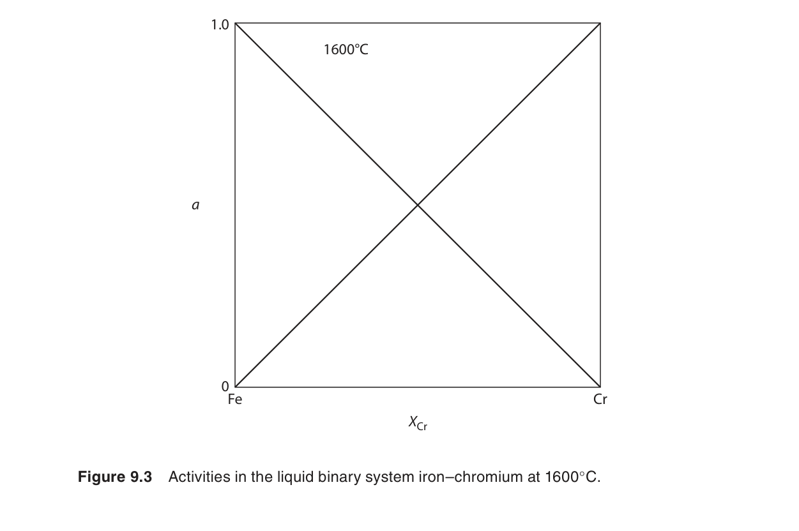
例題 9.3：由活性係數判斷偏離方向
若某合金中 $x_A=0.2$、$\gamma_A=3$，則 $a_A=0.6$。
A 的有效濃度高於莫耳分率，表示它比理想溶液更傾向離開溶液或參與反應。
這對蒸發、氧化或析出平衡都會產生明顯影響。
9.4 Gibbs–Duhem 方程式
- Gibbs–Duhem 方程式是多成分化學位的相容性條件。
- 二元系統中兩個成分的活性不能任意獨立指定。
- 它讓難測成分的活性可由易測成分資料積分得到。
Gibbs–Duhem 方程式是溶液熱力學中最深刻的關係之一。它來自一個簡單的事實：在定溫定壓下，廣延量 $G$ 是成分莫耳數的一階齊次函數。數學結果是：
在二元系統中，以莫耳分率表示：
這意味著：在二元系統中，如果你知道一個成分的活性如何隨組成變化，你就可以計算另一個成分的活性。這是實驗熱力學中極其實用的關係——測量溶劑的蒸氣壓（容易），就可以計算溶質的活性（難以直接測量）。
Gibbs–Duhem 方程式的推導
Gibbs–Duhem 方程式可從 $G$ 的廣延性質嚴格推導。對於一個多成分系統，吉布斯自由能是 $T$、$P$ 和各成分莫耳數的函數，其全微分為：
另一方面，由於 $G$ 是 $n_i$ 的一階齊次函數（歐拉定理），在定溫定壓下：
對上式進行全微分：
將此式與 $dG$ 的基本關係式在 $dT = dP = 0$ 時比較：
消去共同項後得到 Gibbs–Duhem 方程式的標準形式：
除以總莫耳數 $\sum n_i = n$，得到以莫耳分率表示的形式：
這個推導揭示了 Gibbs–Duhem 方程式本質上是 $G$ 的廣延性一致性條件——任何滿足熱力學定律的自由能函數必須服從這個約束。從幾何角度看，$G$ 曲面在每一點處的切線斜率（即 $\mu_i$）的變化必須滿足此關係，以保證曲面的連續性。
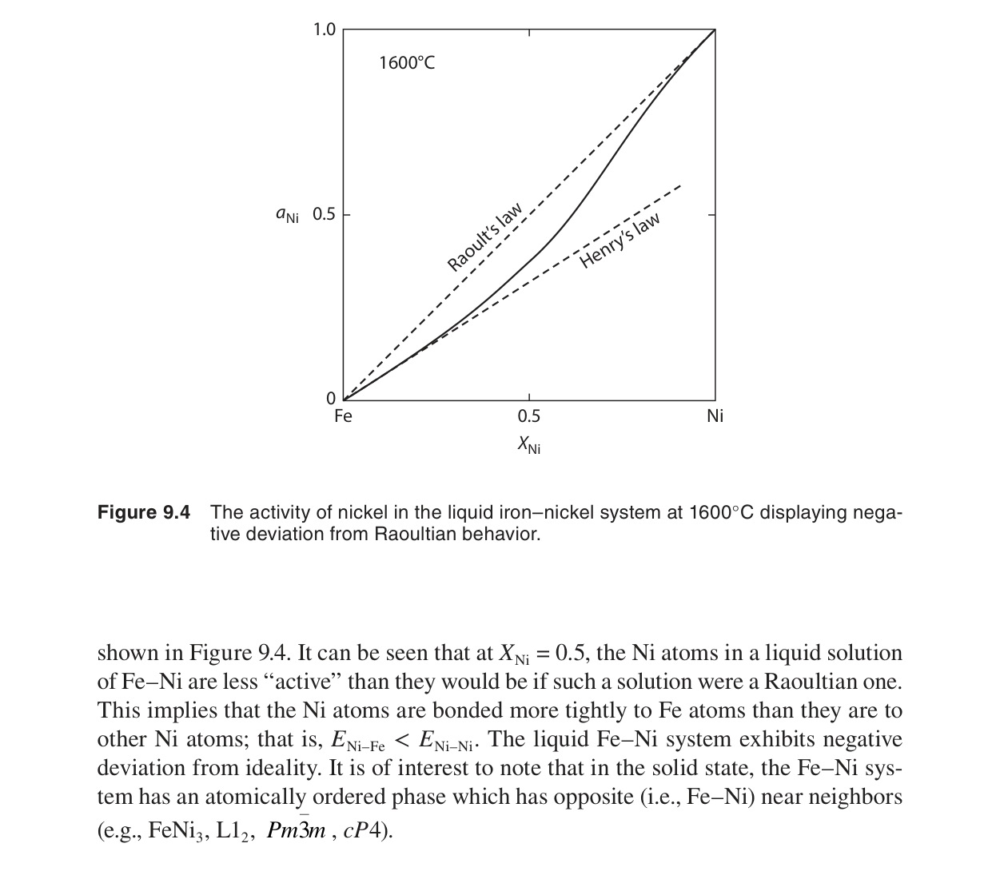
例題 9.4：為何不能任意畫兩條活性曲線？
若你已經指定 $a_A(x)$，Gibbs–Duhem 會決定 $a_B(x)$ 的變化趨勢。
任意再指定一條不相容的 $a_B(x)$，就等於要求同一個 $G(x)$ 曲面有互相矛盾的斜率。
因此 CALPHAD 評估會把 Gibbs–Duhem 一致性當成基本約束。
9.5–9.6 理想溶液的性質
- 理想溶液在所有組成都服從 Raoult 定律。
- 理想混合自由能完全由組態熵驅動，$\Delta H_{\text{mix}}=0$。
- 理想溶液是定義超額函數與非理想偏差的參考基準。
理想溶液定義為所有成分在所有組成範圍內都遵循 Raoult 定律的溶液。對於理想溶液，混合熱力學量與理想氣體混合物的形式完全相同（這不是巧合——兩者都源於「交互作用均勻」的假設）：
$\Delta G_{\text{mix}}^{\text{id}}$ 永遠為負（$x_i < 1$ → $\ln x_i < 0$），因此理想溶液在所有組成下都是自發混合的。混合自由能的極小值發生在等莫耳組成（$x_A = x_B = 0.5$）。
真實溶液很少是理想的。形成理想溶液需要溶質和溶劑原子具有極其相似的尺寸和化學性質——例如苯–甲苯、或某些同位素混合物。大多數金屬合金顯示顯著的非理想行為。
$\Delta G_{\text{mix}}^{\text{id}}$ 的推導
理想溶液中成分 $i$ 的化學位為：
混合前，$n_A$ 莫耳的純 A 和 $n_B$ 莫耳的純 B 的總吉布斯自由能為：
混合後，溶液中各成分的化學位變為 $\mu_i = \mu_i^\circ + RT\ln x_i$，因此溶液的總吉布斯自由能為：
混合自由能 $\Delta G_{\text{mix}} = G_{\text{solution}} - G_{\text{initial}}$：
除以總莫耳數 $n = n_A + n_B$，得到每莫耳混合自由能：
由於 $x_i < 1$ 時 $\ln x_i < 0$，$\Delta G_{\text{mix}}^{\text{id}}$ 始終為負。這意味著理想溶液在所有組成下都是自發形成的。混合熵 $\Delta S_{\text{mix}} = -(\partial\Delta G_{\text{mix}}/\partial T)_P = -R\sum x_i\ln x_i$ 總是正的，反映了混合帶來的微觀狀態數增加。
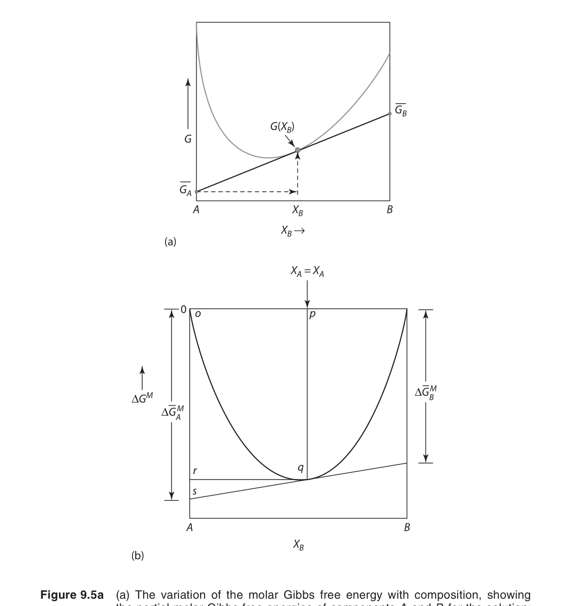
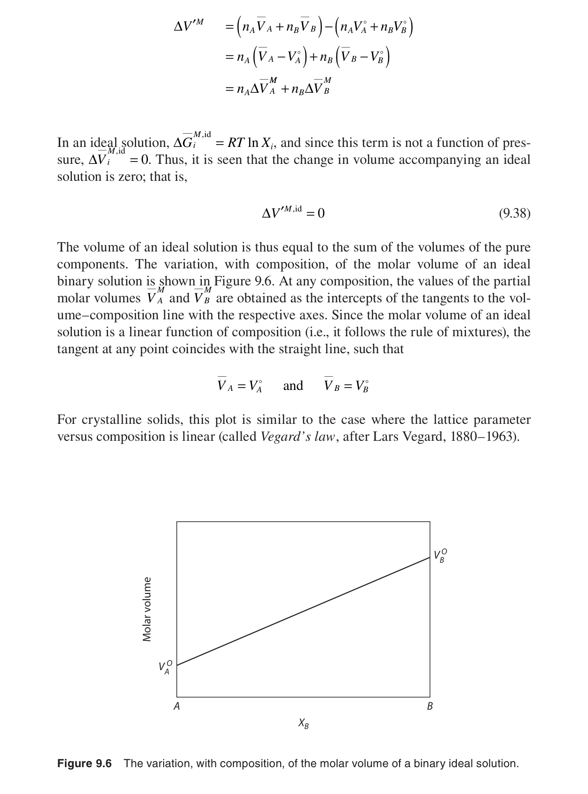
例題 9.5：等莫耳理想溶液的混合自由能
對二元等莫耳理想溶液，$x_A=x_B=0.5$。
$\Delta G_{\text{mix}}^{id}=RT(0.5\ln0.5+0.5\ln0.5)=-RT\ln2$。
溫度越高，熵驅動混合的自由能降低越明顯。
9.7 非理想溶液——超額函數
- 超額函數量化真實溶液相對理想溶液的偏差。
- $G^{xs}>0$ 傾向正偏離與分相，$G^{xs}<0$ 傾向負偏離與有序化。
- $RT\ln\gamma_i$ 是偏莫耳超額自由能。
真實溶液的 $\Delta G_{\text{mix}}$ 可以寫成理想部分加上超額部分：
超額自由能 $G^{\text{xs}}$ 包含了所有非理想行為。對應的超額化學位直接給出活性係數：
$G^{\text{xs}}$ 可以是正或負：
- $G^{\text{xs}} > 0$（$\gamma_i > 1$）：混合不如理想情況有利。極端情況下可能導致不互溶（immiscibility）——系統分為兩個不同組成的相。
- $G^{\text{xs}} < 0$（$\gamma_i < 1$）：混合比理想情況更有利——異類原子之間的鍵結更強。極端情況下可能形成有序化合物。
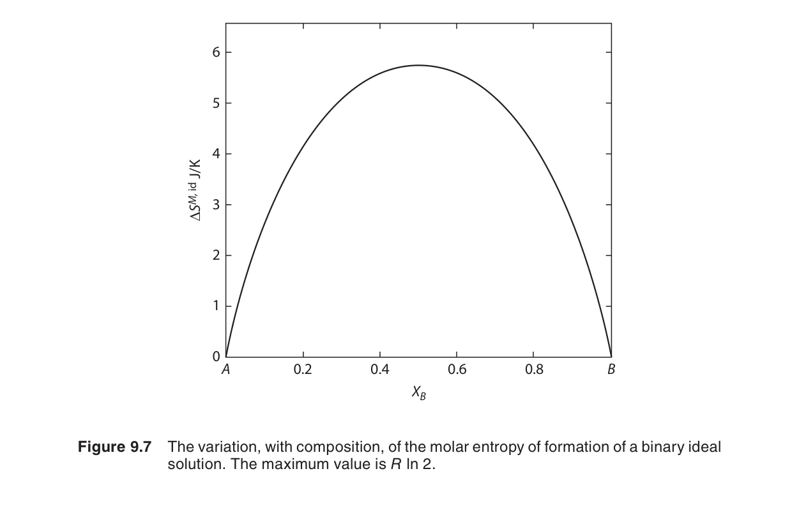
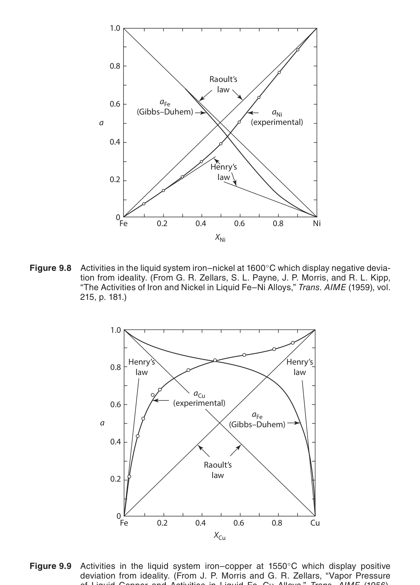
例題 9.7：從 $G^{xs}$ 符號推測材料行為
若 A–B 鍵比 A–A、B–B 鍵弱，混合焓通常為正，$G^{xs}>0$。
高溫時熵項可能仍使單相穩定；低溫時可能出現分相。
這就是許多合金在高溫固溶、低溫析出的熱力學根源。
9.8 Gibbs–Duhem 積分應用
- Gibbs–Duhem 積分可由一個成分活性求另一成分活性。
- Darken $\alpha$-函數讓活性資料更容易平滑外插與積分。
- 這是 CALPHAD 資料評估與實驗資料一致性檢查的重要工具。
Gibbs–Duhem 方程式最重要的實際應用是：如果你知道一個成分的活性在整個組成範圍內的變化，你可以積分求出另一成分的活性。這在實驗上極其有用——因為某些成分的蒸氣壓（從而活性）難以直接測量，但另一個成分的蒸氣壓可以精確測量。
二元系統的 Gibbs–Duhem 積分公式
從 Gibbs–Duhem 方程式 $x_A d\ln a_A + x_B d\ln a_B = 0$ 出發，將 $x_B = 1 - x_A$ 代入並移項：
從 $x_B = 1$（純 B，此時 $a_B = 1$）積分到目標組成 $x_B = x$：
這個積分通常用圖形法或數值法計算——將 $x_A/(1-x_A)$ 對 $\ln a_A$ 作圖，曲線下面積即為 $-\ln a_B$。
利用 $\alpha$-函數的簡化方法（Darken 法）
Darken 引入了 $\alpha$-函數來簡化 Gibbs–Duhem 積分。定義 $\alpha_A = \ln\gamma_A / (1-x_A)^2$，則可以證明：
這個方法的優點是 $\alpha$-函數通常隨組成緩慢變化（在許多系統中接近常數），便於數值積分和外插。這在 CALPHAD 數據評估中被廣泛使用。
工作例題：由溶劑活性求溶質活性
例題：在 1000°C 的 Cu–Fe 液態合金中，已知 Cu 的活性 $a_{\text{Cu}}$（以純液態 Cu 為標準態）在不同莫耳分率 $x_{\text{Cu}}$ 下的測量值如下表。試求 $x_{\text{Fe}} = 0.4$ 時 Fe 的活性。
| $x_{\text{Cu}}$ | $a_{\text{Cu}}$ | $\gamma_{\text{Cu}}$ | $\ln\gamma_{\text{Cu}}$ |
|---|---|---|---|
| 1.0 | 1.000 | 1.000 | 0 |
| 0.9 | 0.902 | 1.002 | 0.002 |
| 0.8 | 0.812 | 1.015 | 0.015 |
| 0.7 | 0.728 | 1.040 | 0.039 |
| 0.6 | 0.648 | 1.080 | 0.077 |
| 0.5 | 0.565 | 1.130 | 0.122 |
解：首先計算 $\ln\gamma_{\text{Cu}} = \ln(a_{\text{Cu}}/x_{\text{Cu}})$，如上表所示。然後將 $\ln\gamma_{\text{Cu}}$ 對 $x_{\text{Fe}} = 1-x_{\text{Cu}}$ 作圖。Gibbs–Duhem 積分給出：
（此處的數值積分可用梯形法或 Simpson 法計算曲線下面積。）
注意 Fe 的活性係數 $\gamma_{\text{Fe}} < 1$，表示在該溫度下 Cu–Fe 交互作用表現為負偏離（$\Omega < 0$）——Fe 原子在 Cu 中的行為與理想溶液相比傾向於「留在」溶液中。
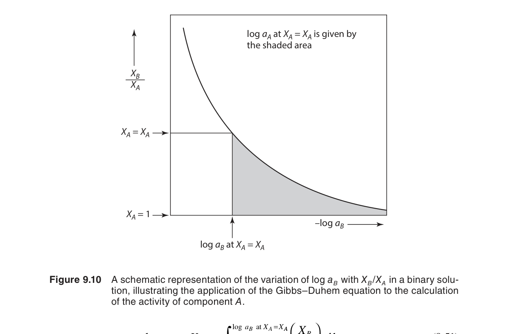
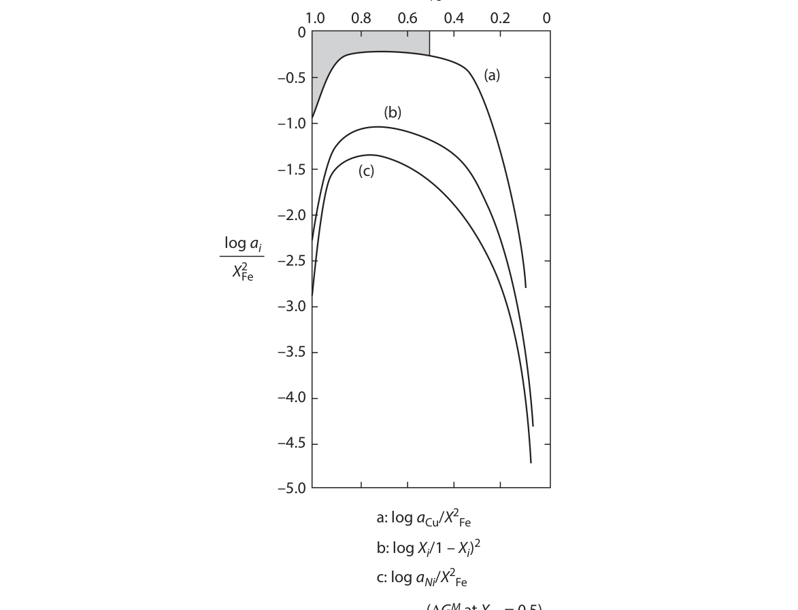
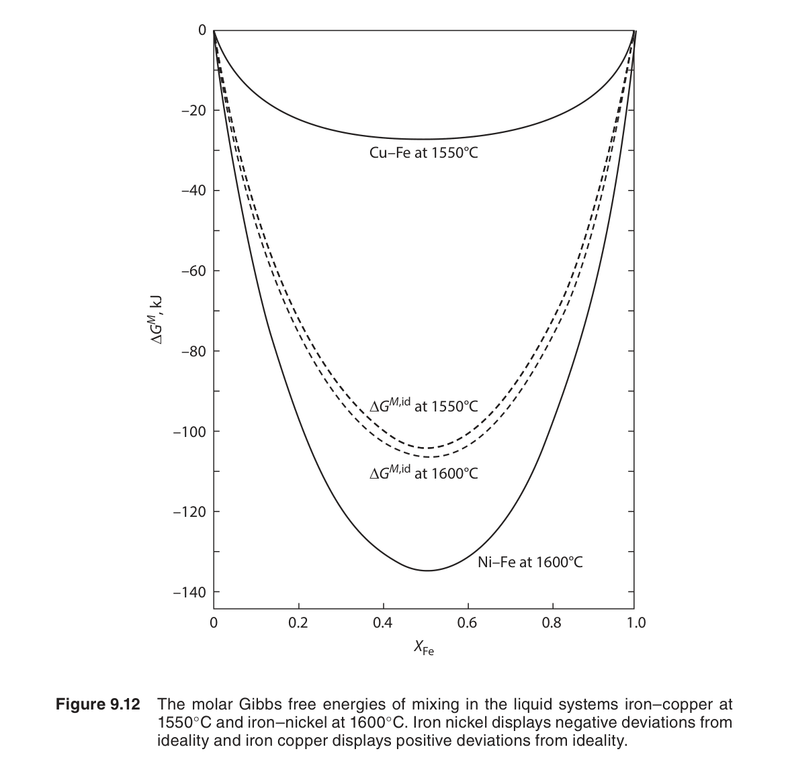
例題 9.8：為何測溶劑也能知道溶質？
若實驗上容易測得 Cu 蒸氣壓，就能求得 $a_{\text{Cu}}(x)$。
Gibbs–Duhem 關係將 $d\ln a_{\text{Cu}}$ 與 $d\ln a_{\text{Fe}}$ 綁在一起。
所以只要資料覆蓋足夠組成範圍，就能積分反推出 Fe 活性。
9.9–9.12 正規溶液模型（Regular Solution Model）⭐
- 正規溶液保留理想混合熵，但加入 $\Delta H_{\text{mix}}=\Omega x_Ax_B$。
- $\Omega$ 的符號決定正偏離、負偏離、分相或有序化傾向。
- 當 $\Omega>2RT$ 時，對稱正規溶液可出現混溶間隙。
正規溶液模型（Hildebrand, 1929）是對理想溶液最簡單但極其有用的推廣。它假設：
- 混合熵仍為理想值（$\Delta S_{\text{mix}} = \Delta S_{\text{mix}}^{\text{id}}$）——原子隨機混合
- 混合焓不為零，由交互作用參數 $\Omega$ 表徵：
因此正規溶液的混合自由能為：
正規溶液 G-x 曲線
下圖顯示了不同 $\Omega$ 值和溫度下正規溶液的 $\Delta G_{\text{mix}}$ 曲線形狀：
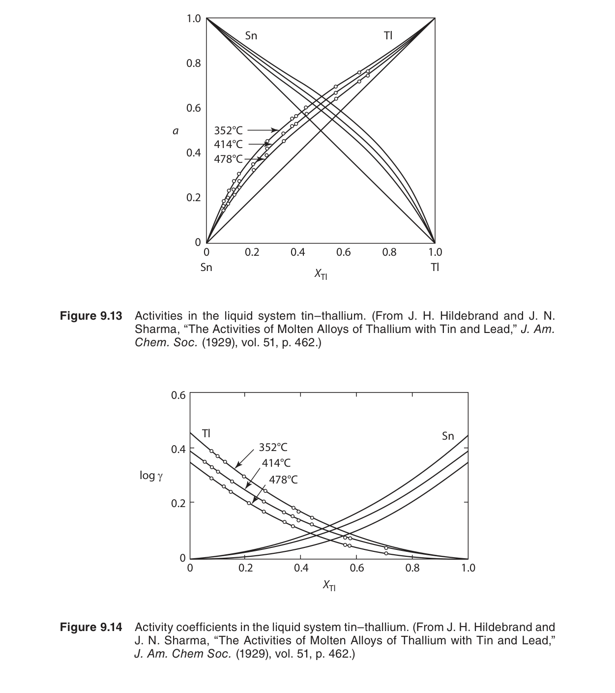
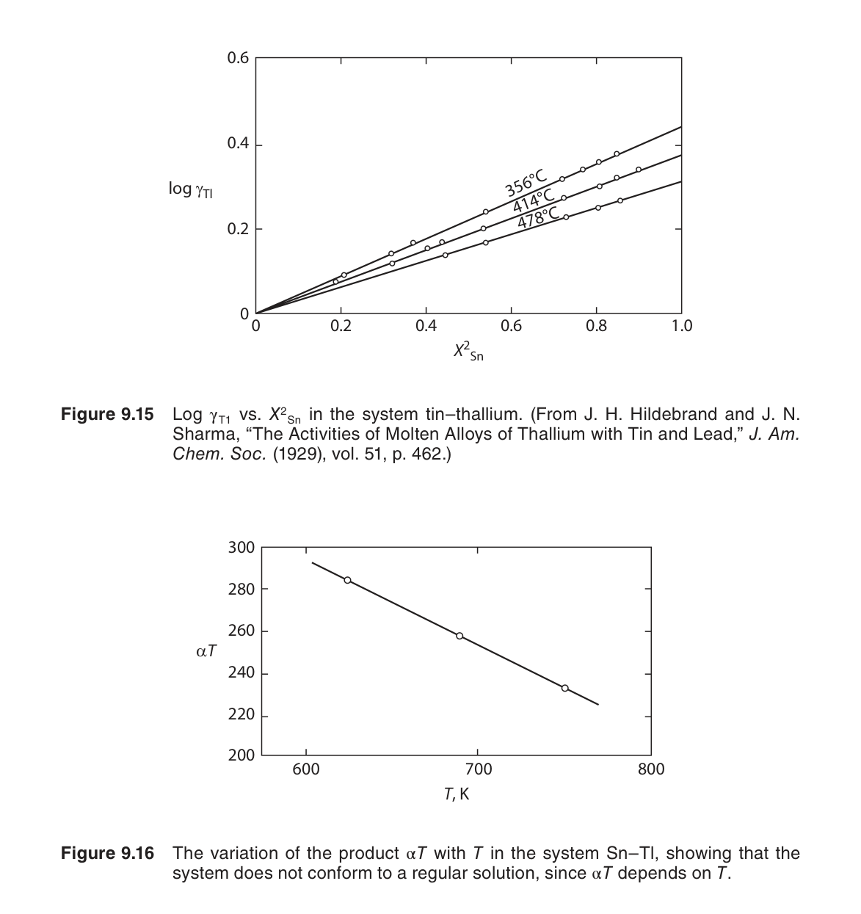
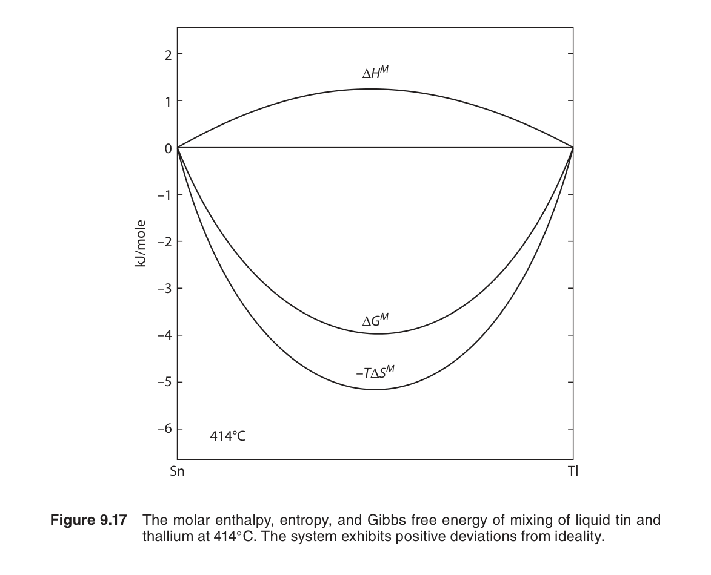
活性係數的推導
正規溶液模型中，成分 A 的偏莫耳混合自由能為：
將 $\Delta G_{\text{mix}} = \Omega x_A(1-x_A) + RT[x_A\ln x_A + (1-x_A)\ln(1-x_A)]$ 代入並化簡：
由於 $\mu_A^{\text{xs}} = RT\ln\gamma_A$，立即得到正規溶液的活性係數：
這組公式是正規溶液模型最實用的結果——只要知道 $\Omega$，就能預測任意組成下的活性係數。
$\Omega$ 的符號和大小決定了溶液的全部行為：
- $\Omega = 0$：理想溶液。
- $\Omega < 0$：A–B 交互作用比 A–A 和 B–B 更強（負混合焓）。溶液在所有溫度下都穩定→有序化或化合物形成。
- $\Omega > 0$：A–B 交互作用不如同類交互作用有利（正混合焓）。
混溶間隙（Miscibility Gap）
當 $\Omega > 0$ 且溫度足夠低時，$\Delta G_{\text{mix}}$ 曲線出現雙凹形狀——存在一個組成範圍內 $\partial^2 G/\partial x^2 < 0$，系統會自發分為兩個組成不同的相。
臨界條件的推導
混溶間隙出現的臨界條件是 $\Delta G_{\text{mix}}$ 曲線的拐點處 $\partial^2\Delta G_{\text{mix}}/\partial x_A^2 = 0$ 且曲線在該點的對稱性要求 $x_A = 0.5$。推導如下：
在 $x_A = 0.5$ 處：
當 $T < T_c$ 時（即 $\Omega > 2RT$），$\Delta G_{\text{mix}}$ 在 $x = 0.5$ 附近出現局部極大值——系統通過分為富 A 相和富 B 相來降低自由能。平衡組成由共切線（common tangent）條件決定：$\mu_A^\alpha = \mu_A^\beta$ 且 $\mu_B^\alpha = \mu_B^\beta$。
混溶間隙的溫度–組成關係
在 $T < T_c$ 時，binodal 曲線（共存曲線）由以下條件給出：
Spinodal 曲線（$\partial^2 G/\partial x^2 = 0$）則由下式給出：
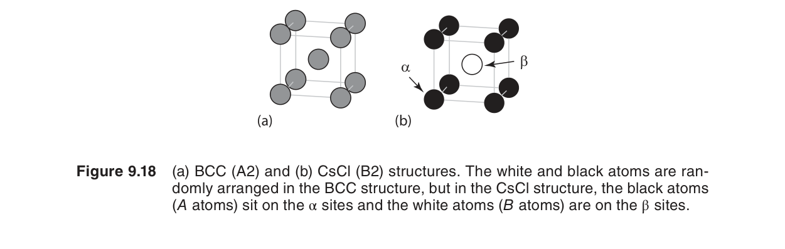
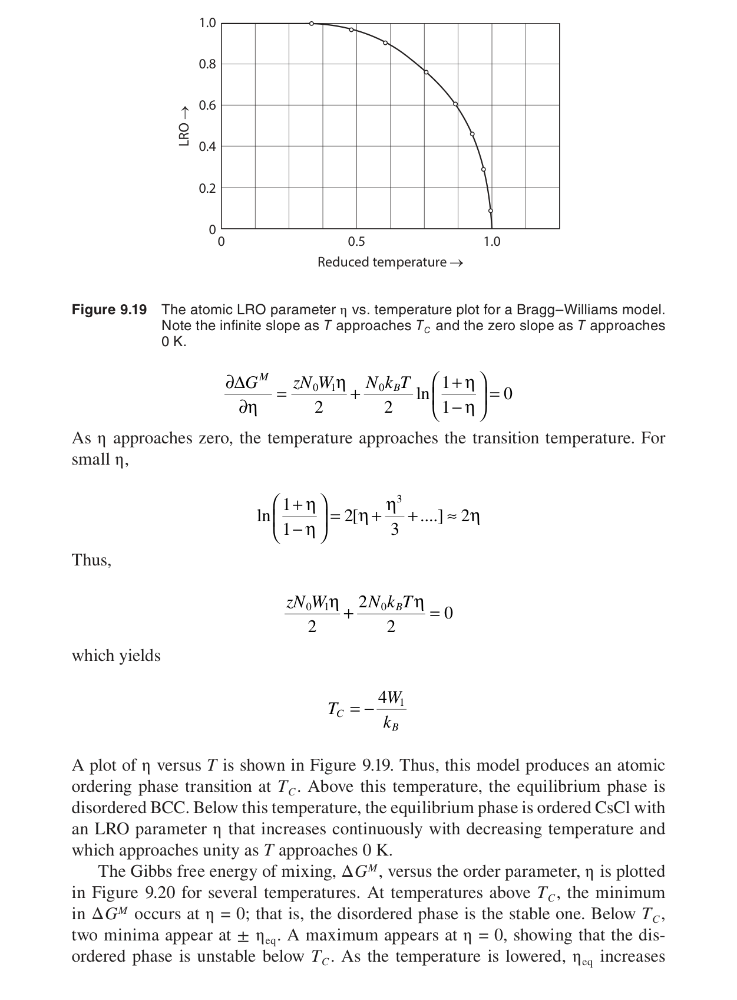
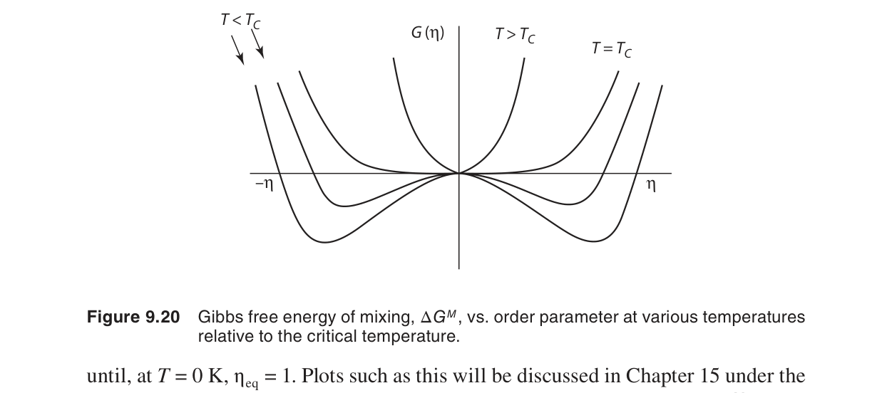
| 系統 | $\Omega$ (kJ/mol) | $T_c$ (K) | 室溫行為 |
|---|---|---|---|
| Au–Ni | ∼+28 | ∼1680 | 室溫下有寬混溶間隙 |
| Cu–Ni | ∼+8 | ∼480 | 高溫完全互溶，低溫可能分相 |
| Fe–Cr | ∼+15 | ∼900 | 中間溫度有混溶間隙（σ 相） |
| Ag–Au | ∼−5 | 無（$\Omega<0$） | 所有溫度完全互溶，傾向有序化 |
例題 9.9：估算混溶間隙臨界溫度
若某對稱正規溶液 $\Omega=20\ \text{kJ/mol}$，則 $T_c=\Omega/(2R)$。
$T_c=20000/(2\times8.314)\approx1203\ \text{K}$。
低於此溫度時，等莫耳附近可能出現分相驅動力。
9.10 統計模型（Statistical Model of Solutions）
- 正規溶液的 $\Omega$ 可由最近鄰鍵能差導出。
- 理想混合熵來自隨機排列的組態數。
- 若原子有序化或短程有序明顯，正規溶液假設會失效。
正規溶液模型的微觀基礎來自於統計熱力學。考慮一個由 $N_A$ 個 A 原子和 $N_B$ 個 B 原子組成的晶體，原子在晶格位置上隨機排列。假設總原子數 $N = N_A + N_B$，配位數為 $z$，則總鍵數為 $zN/2$。
鍵能模型（Bond Energy Model）
三種類型的鍵：A–A、B–B 和 A–B，對應的鍵能分別為 $E_{AA}$、$E_{BB}$ 和 $E_{AB}$。在隨機混合假設下，各類鍵的數量為：
因此總鍵能（混合焓的來源）為：
定義交互作用參數 $\Omega = zN_A[E_{AB} - \frac{1}{2}(E_{AA} + E_{BB})]$（每莫耳），立即恢復正規溶液的 $\Delta H_{\text{mix}} = \Omega x_A x_B$。
組態熵——與第四章的連結
原子隨機混合的組態熵（Configurational Entropy）由 Boltzmann 公式給出：
使用 Stirling 近似 $\ln N! \approx N\ln N - N$：
這正是理想混合熵 $\Delta S_{\text{mix}}^{\text{id}}$。因此，正規溶液的熵與理想溶液完全相同——這是「正規」一詞的原始含義：熵是正規的（正常的），而焓不是。
模型局限性與推廣
正規溶液/統計模型有兩個關鍵假設：隨機混合（忽略有序化傾向）和只考慮最近鄰交互作用。當 $\Omega < 0$（異類鍵更強）時，原子傾向於偏離隨機分佈——低溫下可能形成有序結構（如 CuZn 的 B2 相）。此時需要更複雜的模型：
- Bragg–Williams 近似：引入長程有序參數 $\eta$，允許原子排列偏離隨機分佈，同時保持簡潔的解析形式
- 準化學模型（Quasichemical Model）：考慮鍵能對原子分佈的反饋——A–B 鍵數量不再由隨機概率決定，而是由質量作用定律給出：$\frac{N_{AB}^2}{N_{AA}N_{BB}} = 4\exp(-2\omega/zRT)$，其中 $\omega = E_{AB} - \frac{1}{2}(E_{AA}+E_{BB})$
這些高階模型在第十章有序–無序轉變和第十一章（溶液中的化學反應）中有更詳細的討論。
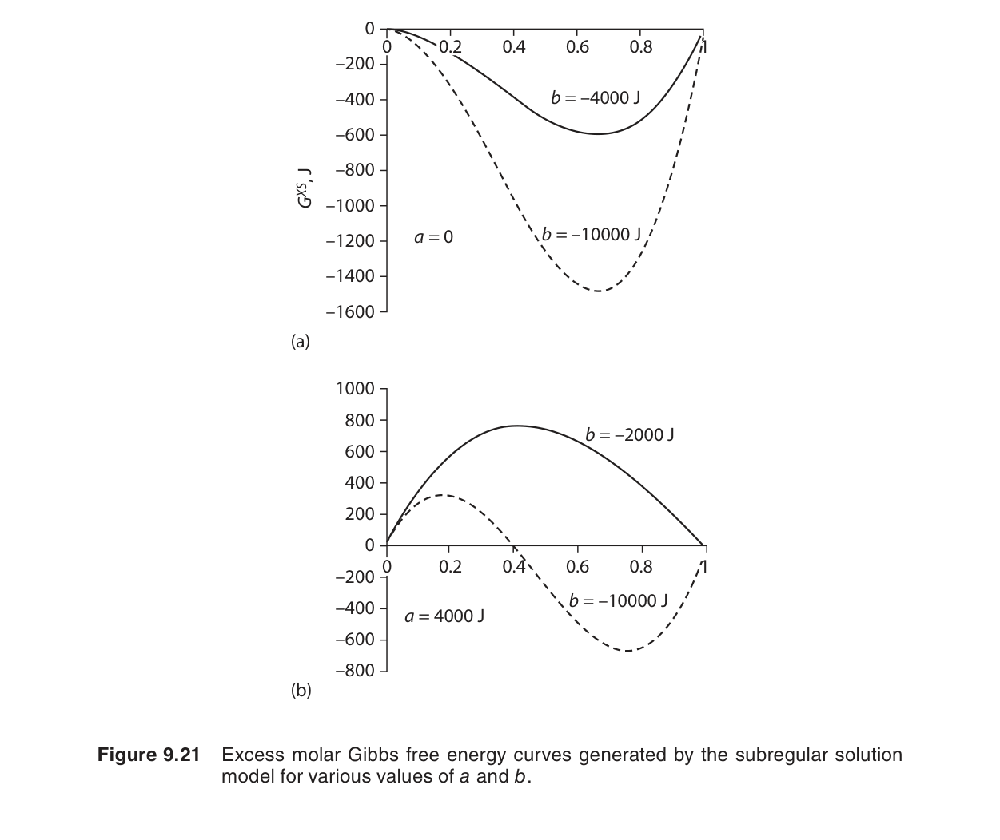
例題 9.10：由鍵能判斷 $\Omega$ 符號
若 $E_{AB}$ 高於 $(E_{AA}+E_{BB})/2$，代表異類鍵不利。
因此 $\Omega>0$，混合焓為正，低溫可能分相。
若 $E_{AB}$ 較低，則 $\Omega<0$，有序化或化合物形成傾向較強。
9.11–9.12 次正規模型與高階推廣（Subregular Model）
- 次正規模型允許交互作用參數隨組成改變。
- Redlich–Kister 多項式是 CALPHAD 描述超額自由能的常用形式。
- 模型階數應由資料需求決定，避免過度擬合。
正規溶液假設 $\Omega$ 與組成無關。對於許多真實系統，這個假設過於簡化——交互作用參數實際上隨組成變化。次正規模型（subregular model）引入組成依賴性：
其中 $\Omega_0$ 是正規項，$\Omega_1$、$\Omega_2$ 是高階項。在 CALPHAD 方法中，這通常表示為 Redlich–Kister 多項式：
其中 $L_k$ 是相互作用參數（可與溫度相關：$L_k = A_k + B_k T$）。這個公式是現代 CALPHAD 數據庫（如 SGTE、NIST）的標準格式。
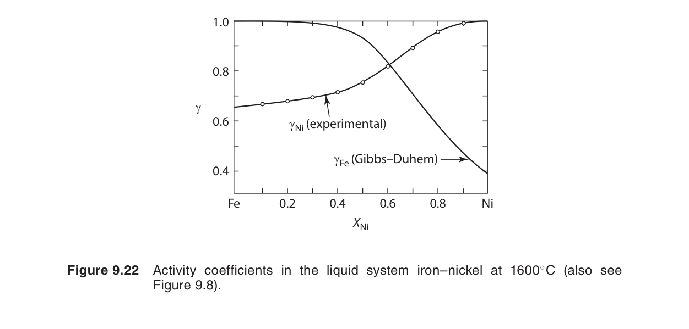
例題 9.11：何時需要次正規項？
若二元系統的 $G^{xs}(x)$ 明顯左右不對稱，單一 $\Omega x_Ax_B$ 無法描述。
加入 $\Omega_1(x_A-x_B)$ 或 Redlich–Kister 的 $L_1$ 項可描述偏向 A-rich 或 B-rich 端的不同交互作用。
若資料仍呈系統性偏差，才考慮更高階項。
常見誤區
自我檢核
檢核 1：活性係數大於 1 代表什麼？
代表成分化學位高於理想溶液預測，通常表示正偏離、蒸氣壓較高或較傾向離開溶液。
檢核 2：Gibbs–Duhem 方程式的用途是什麼？
它約束多成分化學位變化，並可由一個成分的活性資料積分求另一成分活性。
檢核 3：理想溶液的混合焓是多少？
理想溶液假設同類與異類交互作用等效，因此 $\Delta H_{\text{mix}}=0$。
檢核 4：正規溶液何時會有混溶間隙？
對稱正規溶液在 $\Omega>2RT$ 時，等莫耳附近自由能曲率可變負，產生分相驅動力。
延伸閱讀
- CALPHAD：閱讀 Redlich–Kister 參數如何同時擬合相圖、活性與焓資料。
- 冶金應用：把活性概念連到鋼液脫氧、氧化物熔渣與固溶強化設計。
- 統計熱力學：延伸 Bragg–Williams 與準化學模型，理解有序化與短程有序。
- 下一章銜接：預習共切線構造，將本章 $G(x)$ 曲線轉成二元相圖。
本章摘要
- Raoult 定律（$P_i = x_i P_i^\circ$）：溶劑行為，$x_i \to 1$。Henry 定律（$P_i = k_H x_i$）：溶質行為，$x_i \to 0$。
- 活性：$\mu_i = \mu_i^\circ + RT\ln a_i$。$\gamma_i = a_i/x_i$ 量化非理想性。$\gamma_i > 1$→正偏離（傾向離開溶液）。
- Gibbs–Duhem：$\sum x_i\,d\ln a_i = 0$。各成分活性互相約束——知道一個就可以求另一個。
- 理想溶液：$\Delta G_{\text{mix}}^{\text{id}} = RT\sum x_i\ln x_i$，$\Delta H_{\text{mix}} = 0$。基準參考點。
- 正規溶液：$\Delta G_{\text{mix}} = \Omega x_A x_B + RT\sum x_i\ln x_i$。$\Omega > 2RT$→混溶間隙。$RT\ln\gamma_A = \Omega x_B^2$。
- 應用：預測固溶度、相分離、有序化——第十章二元相圖的直接理論基礎。
- Gibbs–Duhem 積分（§9.8）：已知一個成分的活性，可積分求另一成分的活性。Darken $\alpha$-函數法簡化了數值積分。
- 統計模型（§9.10）：鍵能模型導出 $\Omega = zN_A[E_{AB} - \frac{1}{2}(E_{AA}+E_{BB})]$。組態熵 $S_{\text{mix}} = k_B\ln(N!/N_A!N_B!)$ 連結到第四章。
- 次正規模型（§9.11–9.12）：Redlich–Kister 多項式 $G^{\text{xs}} = x_A x_B \sum L_k(x_A-x_B)^k$ 是 CALPHAD 標準。
- 第十章：正規溶液的 $\Delta G_{\text{mix}}$ 是構建二元相圖的基礎——液/固相線的計算基於兩相自由能曲線的共切線構造。
- 第十三章：活性 $a_i$ 直接給出反應平衡常數 $K = a_C^c a_D^d / a_A^a a_B^b$。從本章學習的 $\gamma_i$ 預測（正規溶液模型）可在第十三章直接用於計算凝態反應的平衡組成。